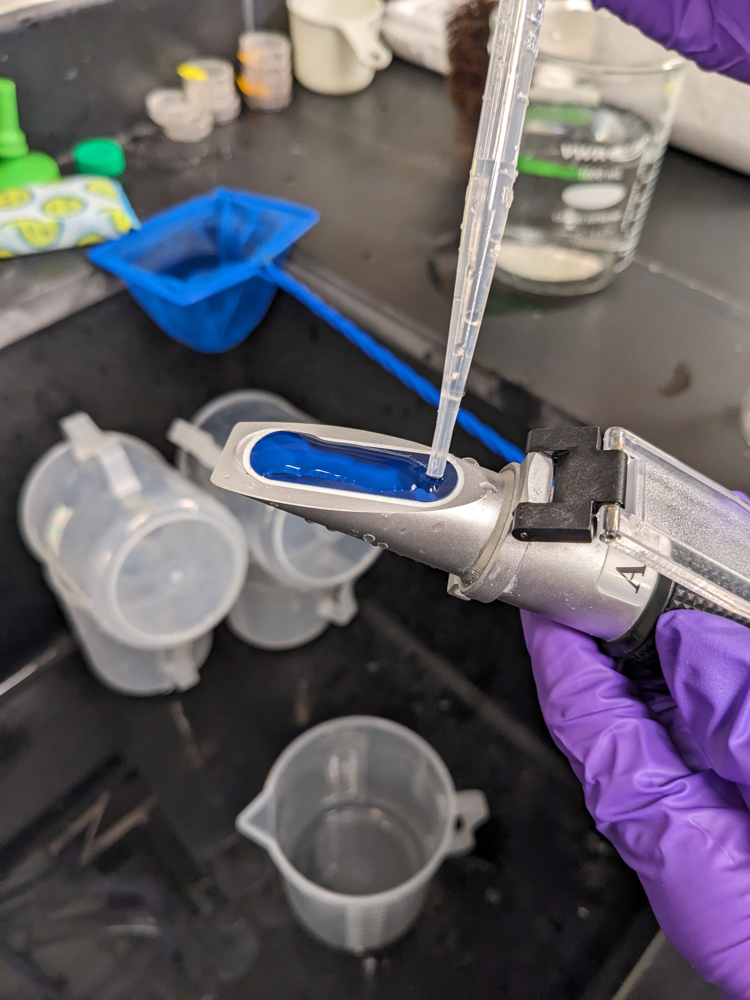
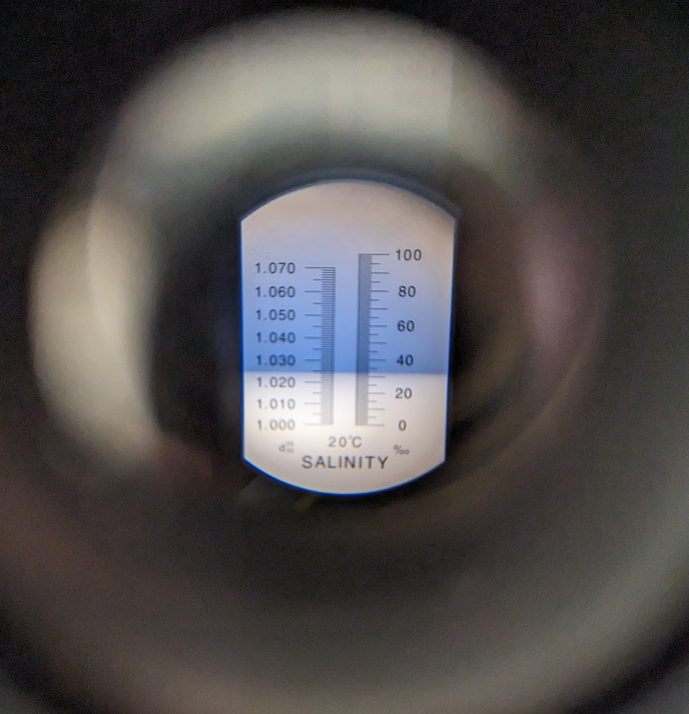
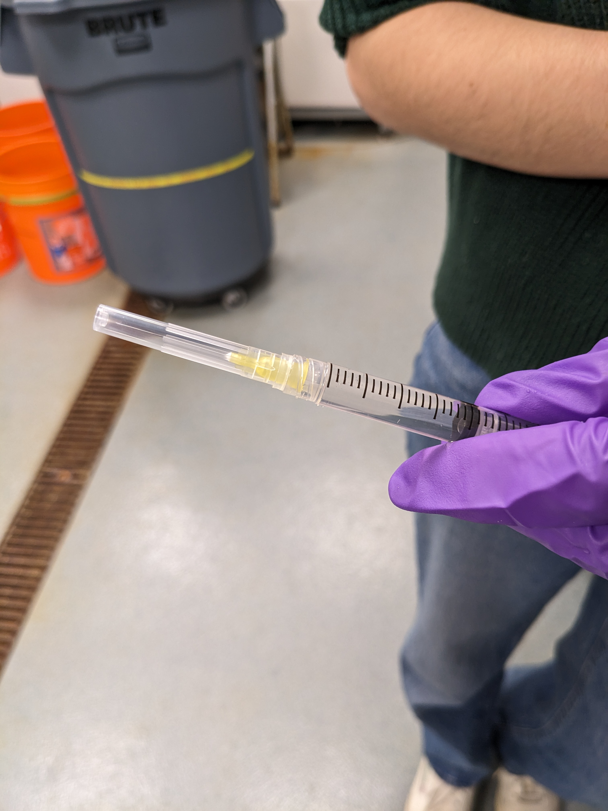
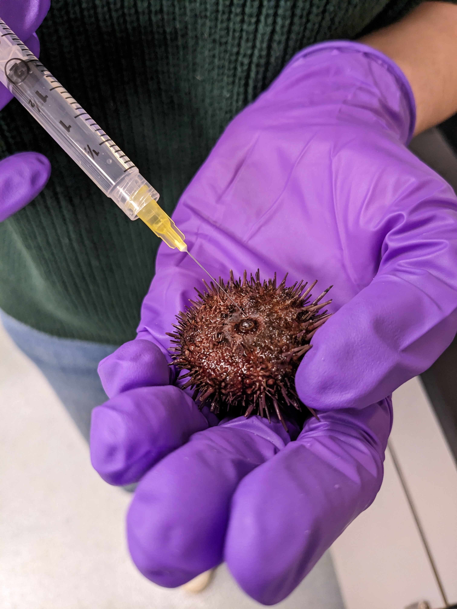
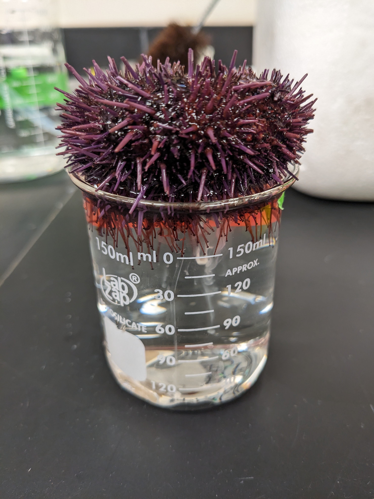
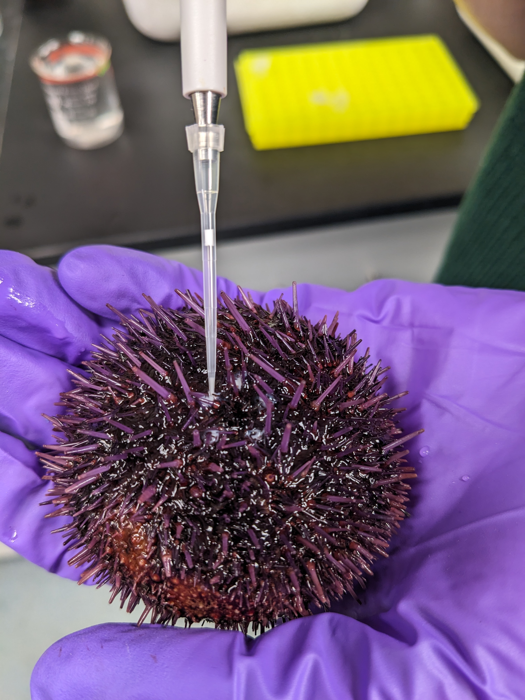
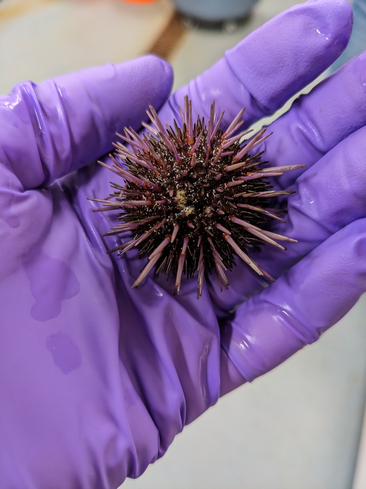
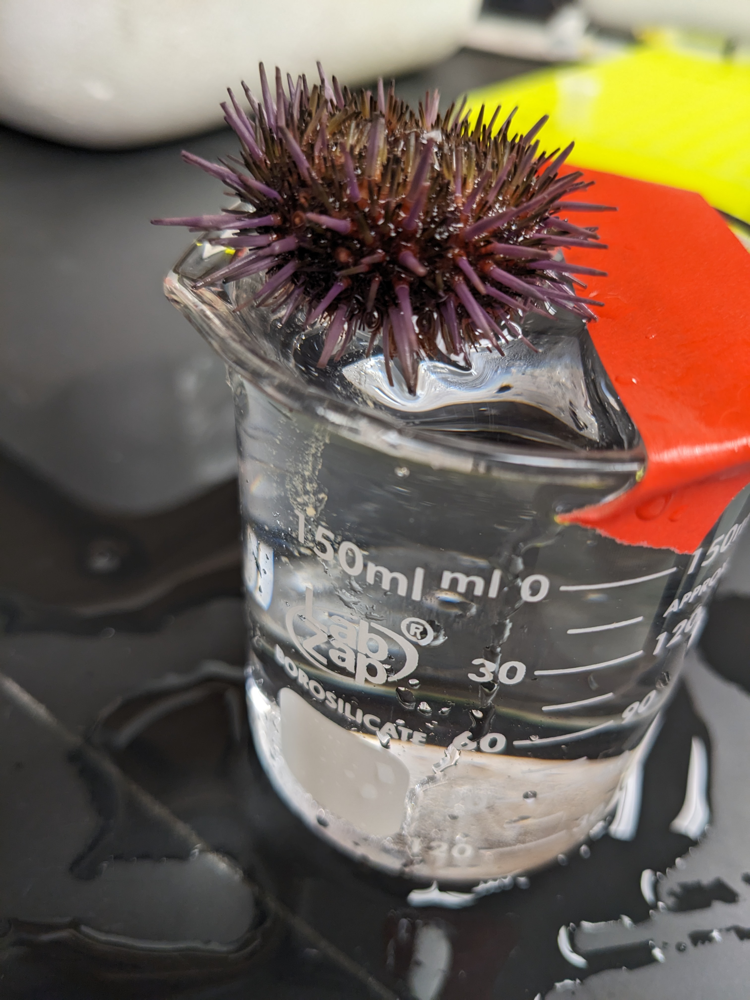
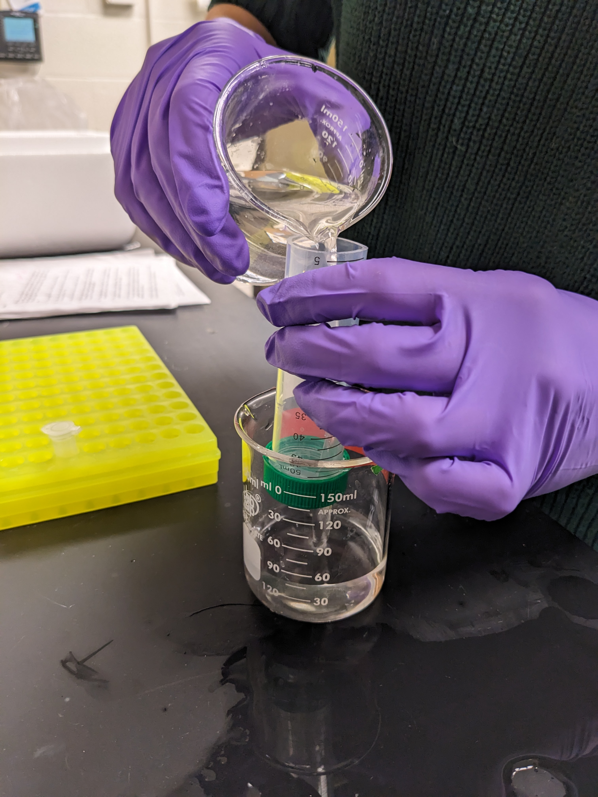

Collecting eggs and sperm
- Prepare a beaker (1000 ml) with sea water (12°C, RO + instant ocean salt). Check for correct salinity (~33%)! Adjust salinity if needed. Pour 25 ml of the filtered sea water into a 50 ml centrifuge tube and add 25ul of 1M 3-aminotriazole (3-AT) stock solution1 to it. “Label as 3AT filtered sea water”. Place the 3AT sea water on ice.


- Fill a syringe with 2ml of 0.5 M KCl solution, twist on needle.


Take a new, clean small beaker and fill it almost to the brim with the sea water from Step 1.
Select an urchin and use the net to take it out from the tank.
Hold urchin upside down in one hand, hold firmly, and shake the urchin confidently.
Place urchin upside down on small full beaker. Make sure that the genital pores are submerged in water. Wait 3-5 minutes. Check for white substance in water regularly.
If no spawning is initiated, repeat steps 5 and 6. If you still don’t see any sperm or egg appear, hold urchin upside down in one hand, and inject ~0.5 ml of KCl solution with the other hand. Make sure that you are injecting into the soft part around the mouth, roughly at 3 separate spots. Shake gently.

Repeat step 6. Continue to shake gently / inject more KCl if no spawning is initiated. White substance should be slowing dropping in water.
If the white substance looks like white paint mixed in water, lift urchin, shake gently to remove excess water, and use a 10ul pipette to pipette sperm into 1.5ml tube. Collect as much as possible (however, small amount should be enough in most cases). Try NOT to mix the sperm with sea water.



- If yellowish substance is visible in “droplets”, leave urchin as it is, submerged upside down on small beaker. Eggs will be collected on the bottom.


After enough eggs or sperm is collected, place the urchin back into the tank it came from.
Place sperm/eggs on ice. Note time (hour and minutes) in lab book. Label both eggs and sperm.
Filter the eggs from debris such as animal spines using 80 um nylon filter mesh. The best results are achieved if the eggs are used within 5-7 hr after spawning. Keep filtered eggs on ice.
NOTE: Use a 3ml transfer pipette to pipette up and down near the eggs to stir them up before pouring them through the filter! This is to avoid missing eggs that get stuck to the bottom.



- Dejelly eggs by pouring them through 80um mesh 3 times from 3 cm about tube opening. Too far up -> eggs will break. Too close -> they won’t be dejellied and will move around in petri dish during the microinjections.

- Place the filtered sea water in the 15°C fridge. Sperm can be stored in a 4°C fridge for a few days. Eggs can be stored in a 4°C fridge for 24 hours with the addition of antibiotics (50 ul of 10 mg/ml ampicillin to 10 ml of sea water with eggs).
Prepare 1 M stock solution of 3-aminotriazole (3-AT, MW = 84.08) by dissolving 0.84 g of 3-AT in 10 ml of ddH2O. This solution can be stored at 4 °C for up to 6 months.↩︎